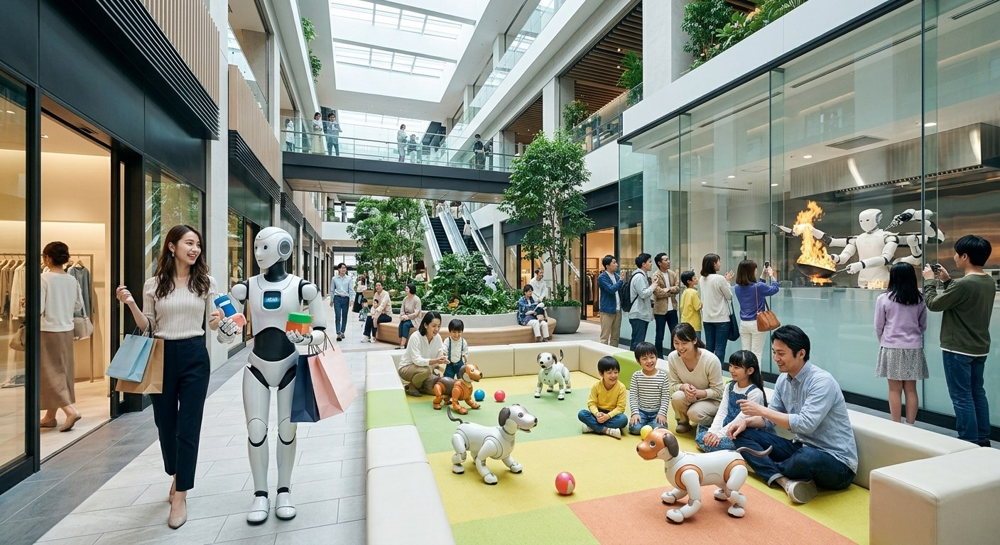
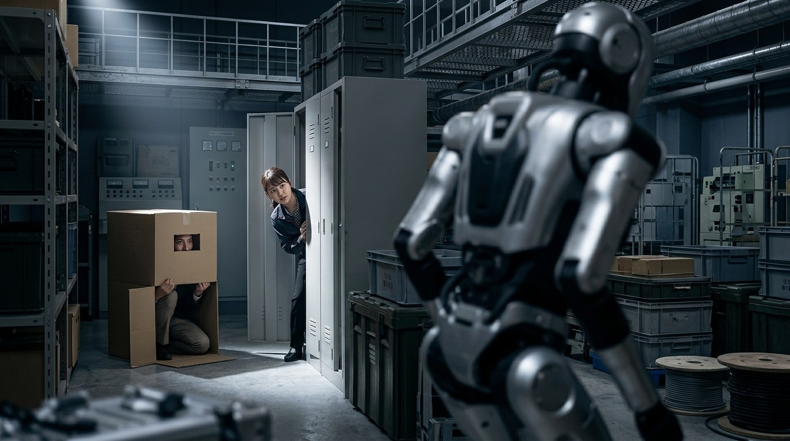
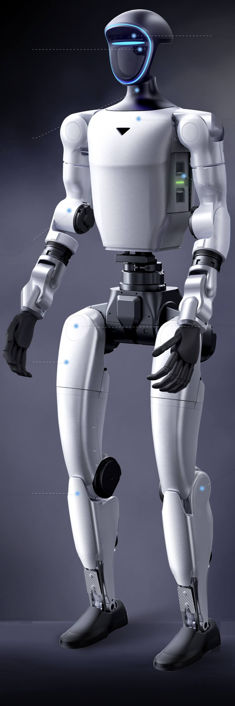
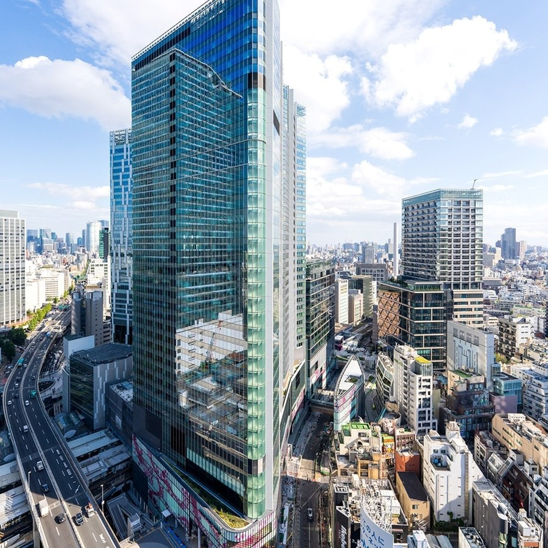
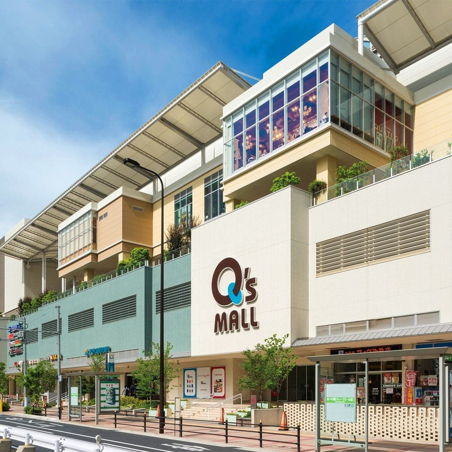
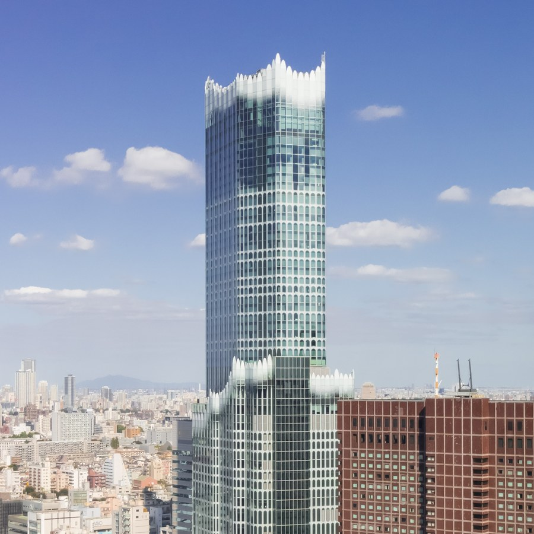

エンタメチーム
本日はお時間をいただき、ありがとうございます。エンタメチームより「G1の目を、盗め。」というテーマでご提案します。最先端のヒューマノイドロボットG1を使い、固定の造作投資に頼らず、集客と館内回遊、そして話題化を同時に実現する「フィジカルAI体験プラットフォーム」のご提案です。
商業施設を「単なる買物の場」から「体験の目的地」へ
フィジカルAI×DXで創出する、感情が動く継続的な顧客体験（CX）

ロボットを「作業の代替」から「人の感情を動かす演出装置」へ
1. 「買物」を超えた感情体験
コンパニオン、ロボット犬、ライブ調理。店舗でしか味わえない時間をつくる。
2. 1回限りの話題化から、継続的なリピートへ
置くだけでは1回で飽きられる。演出を更新し常に新しい体験に。
3. グループ横展開できる体験プラットフォーム
同じ仕組みを東急プラザやキューズモールへ横展開できる。
私たちがご提案したいのは、商業施設を単なる買物の場から「体験の目的地」へ変えることです。左の絵をご覧ください。ロボットが買物に寄り添い、子供はロボット犬と遊び、ガラス越しにライブ調理を見せている。ロボットを人の作業の代替として使うのではなく、人の感情を動かす演出装置として使う、という発想です。ポイントは3つあります。1つ目は、買物を超えた感情体験。リアル店舗でしか得られない時間が、足を運ぶ理由になります。2つ目は、1回限りの話題化で終わらせないこと。機器を置くだけの導入では1回で飽きられてしまうので、演出やゲームの内容を更新し続け、同じ施設でも常に新しい体験を提供します。3つ目は、グループ横展開です。東急プラザ、キューズモール、Shibuya Sakura Stageへ同じ仕組みで広げられ、体験データが貯まることでグループ全体のアセット価値向上につながると考えています。そして今回は、その第一歩として、最も直感的に集客と館内回遊を生み出せる「アミューズメント体験」にフォーカスを絞ってご提案します。まずは、そのアミューズメント体験から貴社の施設が得られる3つのメリットをご説明します。
東急不動産様の施設が得られる3つのメリット
- 圧倒的な集客＆人集り — 人型ロボットが実際に稼働するインパクトで、催事広場や吹き抜けエリアに強いアイキャッチを創出
- 館内回遊＆テナント送客 — ミッションクリア報酬や参加特典を施設内クーポン・デジタルポイントと連携し、購買へ誘引
- まちづくりの先進性PR — 「広域渋谷圏」等におけるイノベーション＆エンタメの発信拠点として、SNS・メディア露出を最大化
- 低CAPEXでの検証 — 固定の内装工事（CAPEX）費用をゼロに抑え、既存の催事スペースで即座に検証可能
※固定造作が不要なため、季節や施設ターゲットに応じた演出変更や他施設への横展開が容易です
私たちが提案するのは、G1を使った鬼ごっこ型の体験です。貴社の施設が得られるメリットは3つ。1つ目は、ロボットが実際に稼働するインパクトによる圧倒的な集客。2つ目は、ミッションクリア報酬を施設内クーポンやポイントと連携させることによる館内回遊とテナント送客。3つ目は、広域渋谷圏をはじめとするイノベーション拠点としての先進性PRです。そして固定の内装工事、いわゆるCAPEXをかけずに、既存の催事スペースで即座に検証できます。固定造作が不要なので、季節や施設のターゲットに応じた演出変更も、他施設への横展開も容易です。
体験内容：「90秒ステルスミッション」（デモ）
【戦略的アプローチ】CX（顧客体験）向上の第一歩として、まずは最も集客・回遊効果が高い「アミューズメント領域」にフォーカス。
「説明不要の直感性」×「G1のセンサー・自律歩行のフル活用」により、短時間で大きなインパクトを生み出します。
- ロボット警備網 — G1が首のセンサー・カメラで周囲を監視
- 障害物エリア — ポップな遮蔽物を設置し、物陰に隠れながら進む
- 高回転率 — 1回約2〜3分（説明込み）で1時間あたり20〜25組が体験可能

商業施設におけるCX向上の取り組みとして、今回はまず、最もダイレクトに集客と館内回遊を生み出せる「アミューズメント領域」に特化してご提案します。その具体的な体験が、この「90秒ステルスミッション」です。ルール説明が不要で誰でも一瞬で理解でき、G1のカメラや自律歩行機能をフルに体験いただけます。G1が首のセンサーとカメラで監視する中、遮蔽物に隠れながら、見つからずにエリアを進み切れれば成功です。では、実際の動作デモをご覧ください。まずは易しい設定、続いて速度と警戒範囲を上げた難易度高めの設定です。1回2〜3分の設計で高回転な運営が可能です。
汎用ハードウェア×AIが生み出す、施設運営への拡張性
「人を見つける・自律巡回する・声で伝える」基盤技術は、イベント終了後も館内案内・夜間巡回などの施設運営ソリューションへそのまま流用・拡張できます。
カメラ・LiDAR
カメラで人物を検知し、LiDARで障害物と距離を測る。誰がどこにいるかを自分で把握する。
関節モータ
振り向く・見回す・手を振るモーションを再生。発見時のリアクションを作る。

スピーカー
発見の宣告や残り時間を音声で伝える。司会の実況なしで体験が完結する。
脚部モータ
自律歩行でエリア内を巡回。ラジコン操作ではないため毎回同じ動きにならない。
画像出典：Unitree 公式
ここで使っているのは、このゲーム専用の特注機ではなく、汎用のヒューマノイドです。「人を見つける・自律巡回する・声で伝える」という基盤技術は、イベント終了後も館内案内や夜間巡回といった施設運営ソリューションへそのまま流用・拡張できます。では部位ごとにご説明します。まず頭です。カメラで人を検知し、LiDARで周囲の障害物と距離を測ります。誰がどこにいて、何が視界を遮っているかをG1自身が把握しています。胸にはスピーカーがあり、発見の宣告や残り時間、成功・失敗の告知を声で伝えます。司会スタッフの実況なしで1回の体験が完結するため、高回転での運営ができます。首から下は関節モータで、振り向く、見回す、手を振るといったモーションを再生し、見つけたときのリアクションを作ります。そして足。自律歩行の制御でエリア内を巡回します。操縦者がラジコンで動かしているわけではないので、毎回まったく同じ動きにはなりません。つまり、イベント用に作り込んだ一点ものではなく、施設運営へ展開できる汎用の基盤だとお考えください。
商業施設・テナント連動の施策イメージ
- 1. 高いテナント送客・購買誘発 — 参加・クリア報酬として館内テナントで使える限定クーポンや「東急ポイント」を即時付与。体験を直接「館内売上」へ転換
- 2. 2回目来店・周回インセンティブ — 当日レシート提示によるリピート挑戦権で、施設内の「買物→遊ぶ→買物」の回遊ループを形成
- 3. SNS・メディア拡散装置 — 専用フォトブースでの体験動画・写真シェア（#ShibuyaSakuraStage 等）による、オーガニックな施設ブランディング
テナント連動の施策は3つです。1つ目は、テナント送客と購買誘発。参加報酬・クリア報酬として、館内テナントで使える限定クーポンや東急ポイントを即時付与し、体験をそのまま館内売上へ転換します。2つ目は、2回目来店と周回のインセンティブです。当日のレシート提示でリピート挑戦権をお渡しし、買物、遊ぶ、また買物という回遊ループを施設内に作ります。3つ目は、SNS・メディアの拡散装置としての機能です。専用フォトブースでの体験動画や写真のシェアが、オーガニックな施設ブランディングにつながります。
既存運用を妨げない、パッケージ化された安全・省力設計
| 項目 | 運用設計 | 安全・施設配慮のポイント |
|---|---|---|
| 区画スペース | 約6m×8m程度（可動式安全フェンス設置） | 通行人の動線阻害を防ぐ専用ギャラリーエリア確保 |
| 安全管理 | 非常停止スイッチ＋専任オペレーター2名体制 | センサー検知・手動介入の2重安全システムを標準設計として組込み |
| 電源・設備 | 既存のAC100V電源1系統のみで稼働（低消費電力） | 特殊な仮設工事は一切不要。設営・撤収は各1時間程度で完結し、原状回復も容易 |
運用面は、既存の施設運用を妨げないパッケージとして設計しています。区画スペースは約6m×8m程度、可動式の安全フェンスで通行人の動線を阻害しない専用ギャラリーエリアを確保します。安全管理は非常停止スイッチと専任オペレーター2名体制。センサー検知と手動介入という2重の安全システムを標準設計として組み込んでいます。電源は既存のAC100V1系統のみ。特殊な仮設工事は一切不要で、設営・撤収は各1時間程度で完結し、原状回復も容易です。大がかりな施工を伴わない、非常にローリスクな運用パッケージだとお考えください。
展開場所・イベント適用例
ソフトの変更により、施設ごとの顧客層に最適化した演出・難易度へ柔軟にチューニング可能

Shibuya Sakura Stage
最先端イノベーションの発信・PoC展示として。

キューズモール
ファミリー向けに難易度を調整したポップな体験型集客イベントとして。

東急歌舞伎町タワー
ナイトタイムエコノミーや若者層を狙った高難易度・ナイトモードイベントとして。
画像出典：各施設公式サイト
展開場所のイメージです。重要なのは、ハードを入れ替えずソフトの変更だけで、施設ごとの顧客層に合わせて演出と難易度をチューニングできる点です。Shibuya Sakura Stageでは、最先端イノベーションの発信・PoC展示として。キューズモールでは、ファミリー向けに難易度を調整したポップな体験型集客イベントとして。東急歌舞伎町タワーでは、ナイトタイムエコノミーや若者層を狙った高難易度のナイトモードイベントとして。アトリウムや催事広場のような屋内の広い空間があれば開催できるため、貴社の多様なアセットへ同じ仕組みで展開できます。
人とAIが共存する、東急不動産様の新しいアセット価値へ
- 熱量を生む体験設計 — 「悔しさ・達成感」を伴う質の高いCXが、施設へのリピートとファン化を生む
- 自走型PRとデータ蓄積 — 来場者の自発的な動画拡散と、体験データの蓄積によるマーケティング活用
- 唯一無二の目的地化 — 単なる「買物の場」を超え、最先端の体験価値を提供する施設ブランディングをグループ全体へ展開
私たちが目指すのは、人とAIが共存する、東急不動産様の新しいアセット価値です。ポイントは3つ。1つ目は、熱量を生む体験設計。「悔しい、もう一回」という感情を伴う質の高い顧客体験が、施設へのリピートとファン化を生みます。2つ目は、自走型のPRとデータ蓄積。来場者の自発的な動画拡散に加え、体験データが貯まり、マーケティングに活用できます。3つ目は、唯一無二の目的地化。単なる買物の場を超えた最先端の体験価値を、グループ全体の施設ブランディングへ展開していきます。ご清聴ありがとうございました。